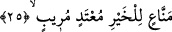
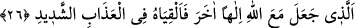

25. Hayra bütün gücüyle engel olanı, azgın şüpheciyi cehenneme atın;
“Hayra engel olan.” O, zekât ve dışındaki farz olan malları dağıtma konusunda çokça
engel olur. Kâfirin tabiatı küfür üzere olduğu gibi, bir başkasının tabiatı şer işlemek ve
hayra engel olmak üzere olur. İnatçı kişinin de tabiatı inâd üzere olur ve hayır namına ne
varsa ehline ulaşmasını engeller, onların aralarını ayırır. Men’: engellemek, atıyye:
hediye ifadesinin zıddıdır. Engel olan adama, “cimri adam” mânâsında “mâni ve
mennâ’” denir. Bu ifade “himâye” için de kullanılır. “Mekanun münî’” yani “içinde
bulunanı himaye eden, tehlikelerden koruyan mekan” ifadesinde olduğu gibi. Ayrıca
âyette geçen “hayır” ifadesinden muradın İslam olduğu söylenmiştir.
Âyet, kardeşinin çocuklarını İslam’a girmekten engellediği için Velid b. Muğîre
hakkında nâzil olmuştur. “Aranızdan İslam’a giren kimse olursa benim yaşadığım
hayırdan yararlanamaz” diyordu.
“Haddi aşan” hakka itibar etmeyen mânâsındadır. Yani o, hakka karşı hatâlı, zâlim ve
hak ehline düşman olan kimsedir. “Şüpheli.” Yani o, Allah ve dini hakkında şüphesi
bulunan bir kişidir. Nitekim kelime, “şek ve şüphe sâhibi” anlamına gelecek şekilde
nisbet sîgasında kullanılmıştır. Yani “içinde şüphe bulunan kişi.” Bunun “şüpheyle itham
edilen” anlamında olduğu da söylenmiştir.
26. Allah ile beraber başka ilâh edineni, şiddetli azaba birlikte atın!
“Allah ile beraber başka ilah edinen” ifadesi mübtedâdır ve şart mânâsını içerir.
Haberi ise “şiddetli olan azaba atın” ifadesidir. Veya bu ifade “tüm kâfirler”den
bedeldir. Bu durumda “atın” ifadesi tekid için tekrarlanmıştır. Baştaki fa harfi ise
cehenneme atma fiilinin, zikredilmiş sıfatlar sebebiyle olduğunu hissettirmek içindir.
Hadiste “İnsanlar hesap anını beklerken aniden Allah boyun şeklinde uzun bir ateş
parçası gönderir. Bu boyun «üç kişiyi cehenneme atmakla emredildim. Allah ile
beraber başka bir ilaha duâ eden, haksız yere adam öldüren ile zorba ve inatçı
olanlar» der ve ardından kuşun taneleri yakaladığı gibi insanlar arasında onları
yakalar. Daha sonra da onları cehennem ateşine atar” buyurulur.[253]
Fenâri’nin Tefsîru’l-Fatiha’sında şöyle geçer: “İnsanlar duruyorken ateşten bir boyun
çıkar. Yani hesaptan önce. Onları meydana gelen şeylerden dolayı terleme alır, korkuları
artar ve kalpleri titrer. İki gözü ve fasih bir dili olan bu boyun o mahlûkata bakar ve “ey
mevkıf ehli, ey burada duranlar, ben sizden üç tür insanı almak üzere vekil kılındım”
der. Bunu üç kez tekrar eder.